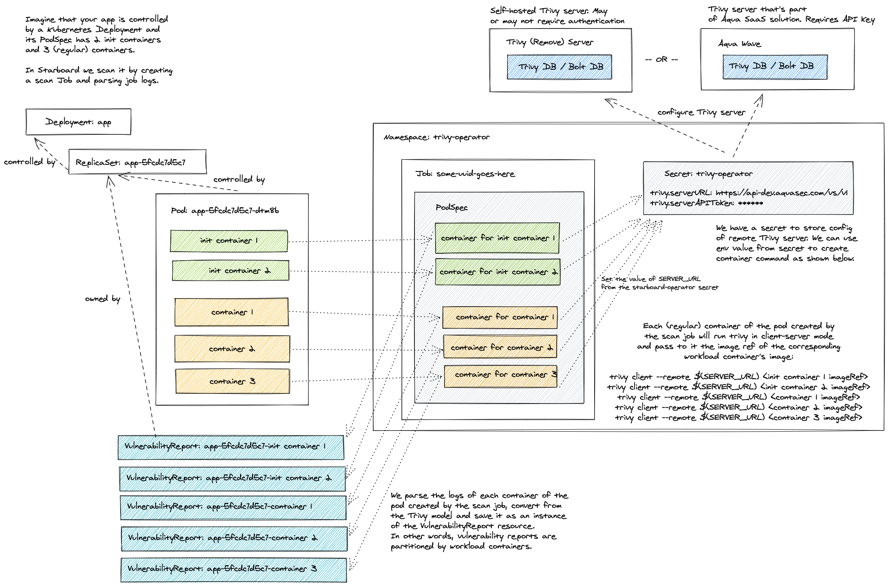

Vulnerability Scanning Configuration
Standalone
The default configuration settings enable Trivy vulnerabilityReports.scanner in Standalone
trivy.mode. Even though it doesn't require any additional setup, it's the least efficient method. Each Pod created
by a scan Job has the init container that downloads the Trivy vulnerabilities database from the GitHub releases page
and stores it in the local file system of the emptyDir volume. This volume is then shared with containers that perform
the actual scanning. Finally, the Pod is deleted along with the emptyDir volume.

The number of containers defined by a scan Job equals the number of containers defined by the scanned Kubernetes workload, so the cache in this mode is useful only if the workload defines multiple containers.
Beyond that, frequent downloads from GitHub might lead to a rate limiting problem. The limits are imposed by GitHub on
all anonymous requests originating from a given IP. To mitigate such problems you can add the trivy.githubToken key to
the trivy-operator secret.
kubectl patch secret trivy-operator-trivy-config -n trivy-system \
--type merge \
-p "$(cat <<EOF
{
"data": {
"trivy.githubToken": "$(echo -n <GITHUB_TOKEN> | base64)"
}
}
EOF
)"
ClientServer
Running Trivy in Client Server mode is more efficient as every scan will access the same Trivy vulnerability database from the server.
There are two options to run the Trivy Operator in Client Server mode as detailed below.
1. Server Managed by the Trivy Operator
The Trivy Operator has an option in the values.yaml file of the Helm chart to specify the Trivy Operator to run in Client Server mode:
operator:
builtInTrivyServer: false
Setting this option to true will enable the Client Server mode, managed by the Trivy Operator. No further configuration is required. The Trivy Operator will spin up two pods in the respective namsepace:
trivy-operator: Responsible for running scanstrivy-server-0: Provides the Trivy vulnerability database to the trivy-operator
2. External Server Managed by the user
Users can connect Trivy to an external Trivy server by changing the default trivy.mode from
Standalone to ClientServer and specifying trivy.serverURL.
kubectl patch cm trivy-operator-trivy-config -n trivy-system \
--type merge \
-p "$(cat <<EOF
{
"data": {
"trivy.mode": "ClientServer",
"trivy.serverURL": "<TRIVY_SERVER_URL>"
}
}
EOF
)"
The Trivy server could be your own deployment, or it could be an external service. See Trivy server documentation for more information.
If the server requires access token and/or custom HTTP authentication headers, you may add trivy.serverToken and trivy.serverCustomHeaders properties to the Trivy Operator secret.
kubectl patch secret trivy-operator-trivy-config -n trivy-system \
--type merge \
-p "$(cat <<EOF
{
"data": {
"trivy.serverToken": "$(echo -n <SERVER_TOKEN> | base64)",
"trivy.serverCustomHeaders": "$(echo -n x-api-token:<X_API_TOKEN> | base64)"
}
}
EOF
)"

Settings
| CONFIGMAP KEY | DEFAULT | DESCRIPTION |
|---|---|---|
trivy.repository |
mirror.gcr.io/aquasec/trivy |
Repository of the Trivy image |
trivy.tag |
0.36.0 |
Version of the Trivy image |
trivy.imagePullSecret |
N/A | imagePullSecret is the secret name to be used when pulling trivy image from private registries example: reg-secret. It is the user responsibility to create the secret for the private registry in trivy-operator namespace. |
trivy.imagePullPolicy |
IfNotPresent |
imagePullPolicy is the pull policy used for trivy image |
trivy.dbRepository |
mirror.gcr.io/aquasec/trivy-db |
External OCI Registry to download the vulnerability database |
trivy.javaDbRepository |
mirror.gcr.io/aquasec/trivy-java-db |
External OCI Registry to download the vulnerability database for Java |
trivy.dbRepositoryInsecure |
false |
The Flag to enable insecure connection for downloading trivy-db via proxy (air-gaped env) |
trivy.mode |
Standalone |
Trivy client mode. Either Standalone or ClientServer. Depending on the active mode other settings might be applicable or required. |
additionalVulnerabilityReportFields |
N/A | A comma separated list of additional fields which can be added to the VulnerabilityReport. Possible values: Description,Links,CVSS,Target,Class,PackagePath,PackageType. Description will add more data about vulnerability. Links - all the references to a specific vulnerability. CVSS - data about CVSSv2/CVSSv3 scoring and vectors. Target - vulnerable element. Class - OS or library vulnerability |
trivy.command |
image |
command. One of image, filesystem or rootfs scanning. Depending on the target type required for the scan. |
trivy.slow |
true |
This flag is to use less CPU/memory for scanning though it takes more time than normal scanning. It fits small-footprint |
trivy.severity |
UNKNOWN,LOW,MEDIUM,HIGH,CRITICAL |
A comma separated list of severity levels reported by Trivy |
trivy.ignoreUnfixed |
N/A | Whether to show only fixed vulnerabilities in vulnerabilities reported by Trivy. Set to "true" to enable it. |
trivy.vulnType |
`` | This flag can be used to tell Trivy to filter vulnerabilities by a pkg-type (library, os) |
trivy.offlineScan |
N/A | Whether to enable the offline scan mode of Trivy preventing outgoing calls, e.g. to "true" to enable it. |
trivy.skipFiles |
N/A | A comma separated list of file paths for Trivy to skip traversal. |
trivy.skipDirs |
N/A | A comma separated list of directories for Trivy to skip traversal. |
trivy.ignoreFile |
N/A | It specifies the .trivyignore file which contains a list of vulnerability IDs to be ignored from vulnerabilities reported by Trivy. |
trivy.ignorePolicy |
N/A | It specifies a fallback policy file which allows to customize which vulnerabilities are reported by Trivy. |
trivy.ignorePolicy.{ns} |
N/A | It specifies a namespace specific policy file which allows to customize which vulnerabilities are reported by Trivy. |
trivy.ignorePolicy.{ns}.{wl} |
N/A | It specifies a namespace/workload specific policy file which allows to customize which vulnerabilities are reported by Trivy. |
trivy.timeout |
5m0s |
The duration to wait for scan completion |
trivy.serverURL |
N/A | The endpoint URL of the Trivy server. Required in ClientServer mode. |
node.collector.imageRef |
ghcr.io/aquasecurity/node-collector:0.0.6 | The imageRef use for node-collector job . |
node.collector.imagePullSecret |
N/A | imagePullSecret is the secret name to be used when pulling trivy node-collector from private registries . |
trivy.serverTokenHeader |
Trivy-Token |
The name of the HTTP header to send the authentication token to Trivy server. Only application in ClientServer mode when trivy.serverToken is specified. |
trivy.serverInsecure |
N/A | The Flag to enable insecure connection to the Trivy server. |
trivy.insecureRegistry.<id> |
N/A | The registry to which insecure connections are allowed. There can be multiple registries with different registry <id>. |
trivy.nonSslRegistry.<id> |
N/A | A registry without SSL. There can be multiple registries with different registry <id>. |
trivy.sslCertDir |
N/A | sslCertDir can be used to override the system default locations for SSL certificate files directory , example: /ssl/certs |
trivy.registry.mirror.<registry> |
N/A | Mirror for the registry <registry>, e.g. trivy.registry.mirror.index.docker.io: mirror.io would use mirror.io to get images originated from index.docker.io |
trivy.httpProxy |
N/A | The HTTP proxy used by Trivy to download the vulnerabilities database from GitHub. |
trivy.httpsProxy |
N/A | The HTTPS proxy used by Trivy to download the vulnerabilities database from GitHub. |
trivy.noProxy |
N/A | A comma separated list of IPs and domain names that are not subject to proxy settings. |
trivy.resources.requests.cpu |
100m |
The minimum amount of CPU required to run Trivy scanner pod. |
trivy.resources.requests.memory |
100M |
The minimum amount of memory required to run Trivy scanner pod. |
trivy.resources.requests.ephemeral-storage |
`` | The minimum amount of ephemeral-storage required to run Trivy scanner pod. |
trivy.resources.limits.cpu |
500m |
The maximum amount of CPU allowed to run Trivy scanner pod. |
trivy.resources.limits.memory |
500M |
The maximum amount of memory allowed to run Trivy scanner pod. |
trivy.resources.limits.ephemeral-storage |
`` | The maximum amount of ephemeral-storage allowed to run Trivy scanner pod. |
trivy.storageClassName |
`` | The name of the storage class to be used for Trivy server PVC. |
trivy.podLabels |
`` | The extra pod labels to be used for Trivy server. |
trivy.priorityClassName |
`` | PriorityClassName is the name of the priority class used for trivy server. |
trivy.server.resources.requests.cpu |
200m |
The minimum amount of CPU required to run trivy server. |
trivy.server.resources.requests.memory |
512Mi |
The minimum amount of memory required to run trivy server. |
trivy.server.resources.limits.cpu |
1 |
The maximum amount of CPU allowed to run trivy server. |
trivy.server.resources.limits.memory |
1Gi |
The maximum amount of memory allowed to run trivy server. |
| SECRET KEY | DESCRIPTION |
|---|---|
trivy.githubToken |
The GitHub access token used by Trivy to download the vulnerabilities database from GitHub. Only applicable in Standalone mode. |
trivy.serverToken |
The token to authenticate Trivy client with Trivy server. Only applicable in ClientServer mode. |
trivy.serverCustomHeaders |
A comma separated list of custom HTTP headers sent by Trivy client to Trivy server. Only applicable in ClientServer mode. |